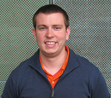

|
People
Faculty
Current graduate students
Current collaborators
Graduated Ph.D. students
|  | Matthew Sinclair, Ph.D. 2017
Ph.D. thesis: Efficient Coherence and Consistency for Specialized Memory Hierarchies
First Employment: Assistant Professor at University of Wisconsin - Madison | | Hyojin Sung, Ph.D. 2015
Ph.D. thesis: DeNovo: Rethinking the Memory Hierarchy for Disciplined Parallelism
First Employment: IBM Research | | Rakesh Komuravelli, Ph.D. 2014
Ph.D. thesis: Exploiting Software Information for an Efficient Memory Hierarchy
First Employment: Qualcomm Research |  | Siva Kumar Sastry Hari, Ph.D. 2013
Ph.D. thesis: Preserving Application Resiliency on Unreliable Hardware
First Employment: NVIDIA Research | | Pradeep Ramachandran, Ph.D. 2011
Ph.D. thesis: Detecting and Recovering from In-core Hardware Faults through Software Anomaly Treatment
First Employment: Intel Corporation | | Man-Lap (Alex) Li, Ph.D. 2009
Ph.D. thesis: WAT: Designing Resilient Hardware by Treating Software Anomalies
First Employment: Assistant Professor at The George Washington University | | Xiaodong (Jerry) Li, Ph.D. 2008
Ph.D. thesis: Soft Error Modeling and Analysis for Microprocessors
First Employment: Deutsche Bank | | Jayanth Srinivasan, Ph.D. 2006
Ph.D. thesis: Lifetime Reliability Aware Microprocessors
First Employment: McKinsey and Company | | Ruchira Sasanka, Ph.D. 2005
Ph.D. thesis: Energy Efficient Support for All Levels of Parallelism for Complex Media Applications
First Employment: Intel Corporation | | Christopher J. Hughes, Ph.D. 2003
Ph.D. thesis: General-Purpose Processors for Multimedia Applications: Predictability and Energy Efficiency
First Employment: Intel Microprocessor Research Labs | | Vijay S. Pai, Ph.D. 2000 (Rice University)
Ph.D. thesis: Exploiting Instruction-Level Parallelism for Memory System Performance
First Employment: Assistant Professor at Rice University | | Parthasarathy Ranganathan, Ph.D. 2000 (Rice University)
Ph.D. thesis: General-Purpose Architectures for Media Processing and Database Workloads
First Employment: Compaq Western Research Laboratory |
Graduated M.S.
students
Lin Cheng, M.S.2017
Robert Smolinski, M.S.2013
Vibhore Vardhan, M.S.2004
Ritu Gupta, M.S.2004
Rohit Jain, M.S.2002
Praful Kaul, M.S.2000
Murthy Durbhakula, M.S.1998
Hazim Abdel-Shafi, M.S.1997
Tracy Harton, M.S.1997
Jonathan Hall, M.S.1996
Past visiting students and undergraduate students
Apurva Jantrania Chanik Park Dennis Geels Joshua Paul Khoa To Mathew Dumm Michael Simon Paul Adamczyk Sean Nicolay Tracy Harton
|